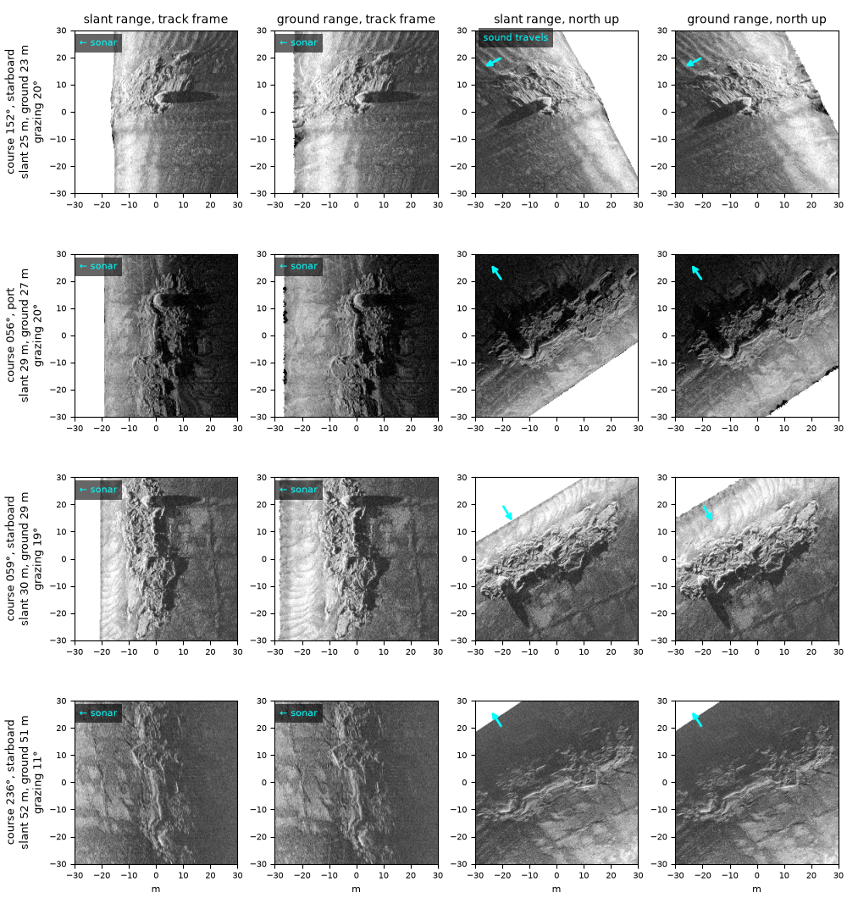
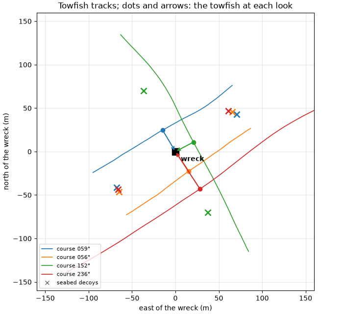
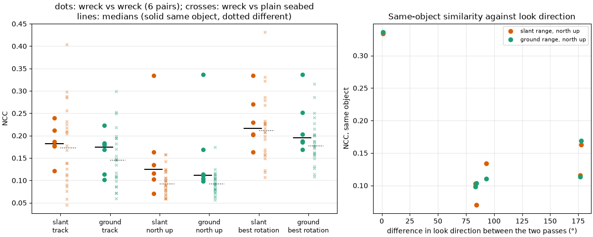

Note
Go to the end to download the full example code.
Does an object look the same from every pass?#

An object detector trained on sidescan images sees each object from several directions and ranges. In slant range the across-track axis is compressed near nadir and stretched far out, so the same object changes shape with range; in ground range it keeps its size. If that matters, image chips of one object cut from different passes should agree better in ground range than in slant range.
This page cuts chips of the Dynamo wreck from the four passes of
Four passes over one wreck: native and north-up, processed the same way (ship positions, smoothed
navigation, course as heading, a 27.5 m cable layback beyond the tow
point), and compares them pair by pair. Each look gives four chips:
slant or ground range, each in the track frame (rows along track,
columns away from the sonar, as the sonar sees it) and turned
north up with the heading. Two chips a and b are scored by
their normalized cross-correlation over the pixels both have,
1 for identical images up to brightness and contrast, about 0 for unrelated ones. The best value over shifts of up to 3 m absorbs what is left of the navigation error. As a baseline, each chip of the wreck is also scored against chips of plain seabed cut from the other passes at the same range, 100 m along track from the wreck.
Data: BGS London Gateway, Klein 3000 at 400 kHz, Open Government Licence v3.0, contains data supplied by UKRI (see Example data).
Usage: python examples/gallery/plot_look_consistency.py [output_dir]
# 2026 rshomberg@uri.edu
import math
import sys
import warnings
from itertools import combinations
from pathlib import Path
import matplotlib.pyplot as plt
import numpy as np
from pyproj import Transformer
from scipy import ndimage
from scipy.signal import fftconvolve
from sidescanpy import datasets
from sidescanpy.export.windows import along_track_spacing_m
from sidescanpy.export.windows.levels import with_db_var
from sidescanpy.io import read_and_convert
from sidescanpy.log import configure_logging
from sidescanpy.processing import (
altitude_from_bottom_track,
apply_layback,
compute_geometric_ranges,
compute_georeferencing,
course_over_ground,
interpolate_aux_onto_pings,
smooth_navigation,
)
from sidescanpy.processing.navigation import along_track_distance_m
out = Path(sys.argv[1]) if len(sys.argv) > 1 else Path(".")
out.mkdir(parents=True, exist_ok=True)
configure_logging("ERROR")
LINES = ["bgs_london_gateway_dynamo_78.xtf", "bgs_london_gateway_dynamo_86.xtf",
"bgs_london_gateway_dynamo_88.xtf", "bgs_london_gateway_dynamo_85.xtf"]
LAYBACK_M = 27.5
CHIP_M, CHIP_PX = 60.0, 240 # chips 60 m across at 0.25 m
SCORE_PX, MAX_SHIFT_M = 60, 8.0 # scored at 1 m pixels, best shift up to 8 m
HIGHPASS_M = 6.0 # structure broader than this is removed before scoring
DECOY_M = 80.0 # plain-seabed chips this far along track from the wreck
M_PER_DEG = 111_320.0
# The wreck centre as these passes place it (as on the four-passes page).
east, north = datasets.BGS_LONDON_GATEWAY_WRECKS["Dynamo"]
wreck_lon, wreck_lat = Transformer.from_crs(32631, 4326, always_xy=True).transform(east - 4.0, north + 6.0)
cos_lat = math.cos(math.radians(wreck_lat))
def local_xy(lat, lon):
"""East and north metres from the wreck centre."""
return (np.asarray(lon) - wreck_lon) * M_PER_DEG * cos_lat, (np.asarray(lat) - wreck_lat) * M_PER_DEG
def georeferenced_pass(name):
"""One pass, processed as on the four-passes page, cut to the pings near the wreck."""
survey = read_and_convert([datasets.fetch(name)], fmt="xtf", nav_crs="EPSG:32631")
survey = smooth_navigation(interpolate_aux_onto_pings(survey), window_s=5.0)
ds = survey.get_frequency("hz_400000").dataset.load()
ds = ds.assign(heading_deg=("ping", course_over_ground(ds, half_window_s=15.0)))
ds = apply_layback(ds, layback_m=LAYBACK_M)
x, y = local_xy(ds["latitude"].values, ds["longitude"].values)
closest = int(np.nanargmin(np.hypot(x, y)))
ds = ds.isel(ping=slice(max(closest - 600, 0), closest + 600))
ds = compute_georeferencing(compute_geometric_ranges(altitude_from_bottom_track(ds)))
return with_db_var(ds)
passes = [georeferenced_pass(name) for name in LINES]
One look per pass#
A look is the georeferenced sample nearest the wreck centre: its ping, side and sample give the course, the slant and ground range, and the grazing angle (from the altitude) at which that pass saw the wreck. The decoys are the same side and sample 100 m along track before and after, on plain seabed.
def describe(ds, ping, channel, sample):
ground = float(abs(ds["across_track_m"].values[ping, channel, sample]))
altitude = float(ds["altitude_m"].values[ping])
heading = float(ds["heading_deg"].values[ping])
return {"ping": ping, "channel": channel, "sample": sample, "heading_deg": heading,
"side": "port" if channel == 0 else "starboard",
"slant_m": float(ds["slant_range_m"].values[ping, channel, sample]), "ground_m": ground,
"altitude_m": altitude,
"grazing_deg": math.degrees(math.atan2(altitude, ground)),
"look_bearing_deg": (heading + (90 if channel == 1 else -90)) % 360}
looks, decoys = [], []
for ds in passes:
x, y = local_xy(ds["latitude_per_sample"].values, ds["longitude_per_sample"].values)
ping, channel, sample = (int(i) for i in np.unravel_index(np.nanargmin(np.hypot(x, y)), x.shape))
looks.append(describe(ds, ping, channel, sample))
along = along_track_distance_m(ds, fill_nav_stalls=True)
pass_decoys = []
for offset in (-DECOY_M, DECOY_M):
p = int(np.argmin(np.abs(along - along[ping] - offset)))
if abs(along[p] - along[ping] - offset) < 5.0:
pass_decoys.append(describe(ds, p, channel, sample))
decoys.append(pass_decoys)
for lk in looks:
print(f"course {lk['heading_deg']:03.0f}°, {lk['side']:9s} altitude {lk['altitude_m']:4.1f} m, "
f"slant {lk['slant_m']:5.1f} m, ground {lk['ground_m']:5.1f} m "
f"({100 * lk['ground_m'] / lk['slant_m']:.0f} %), grazing {lk['grazing_deg']:4.1f}°, "
f"looking toward {lk['look_bearing_deg']:03.0f}°")
print(f"decoys: {sum(len(d) for d in decoys)}")
fig, ax = plt.subplots(figsize=(7, 6.4), constrained_layout=True)
colours = plt.cm.tab10(np.arange(len(passes)))
for ds, lk, pass_decoys, colour in zip(passes, looks, decoys, colours):
tx, ty = local_xy(ds["latitude"].values, ds["longitude"].values)
ax.plot(tx, ty, color=colour, lw=1.2, label=f"course {lk['heading_deg']:03.0f}°")
nx, ny = tx[lk["ping"]], ty[lk["ping"]]
ax.plot(nx, ny, "o", color=colour, ms=6)
ax.annotate("", xy=(0, 0), xytext=(nx, ny), arrowprops=dict(arrowstyle="->", color=colour, lw=1.5))
for d in pass_decoys:
dx, dy = local_xy(ds["latitude_per_sample"].values[d["ping"], d["channel"], d["sample"]],
ds["longitude_per_sample"].values[d["ping"], d["channel"], d["sample"]])
ax.plot(dx, dy, "x", color=colour, ms=8, mew=2)
ax.plot(0, 0, "s", color="k", ms=10)
ax.annotate("wreck", (0, 0), xytext=(8, -14), textcoords="offset points", fontweight="bold")
ax.plot([], [], "x", color="0.4", label="seabed decoys")
ax.set(xlim=(-160, 160), ylim=(-160, 160), aspect="equal", xlabel="east of the wreck (m)",
ylabel="north of the wreck (m)", title="Towfish tracks; dots and arrows: the towfish at each look")
ax.grid(alpha=0.3)
ax.legend(loc="lower left", fontsize=8)
fig.savefig(out / "look_consistency_tracks.png", dpi=150)

course 059°, starboard altitude 9.9 m, slant 30.5 m, ground 28.8 m (95 %), grazing 19.0°, looking toward 149°
course 056°, port altitude 10.2 m, slant 29.1 m, ground 27.3 m (94 %), grazing 20.4°, looking toward 326°
course 152°, starboard altitude 8.8 m, slant 25.1 m, ground 23.5 m (94 %), grazing 20.5°, looking toward 242°
course 236°, starboard altitude 9.9 m, slant 52.4 m, ground 51.5 m (98 %), grazing 10.9°, looking toward 326°
decoys: 8
The chips#
Every chip is sampled from the native ping-by-sample grid, by linear
interpolation along track (between pings) and across track (along each
ping), at points laid out in metres: in the track frame along track
and away from the sonar, north up east and north rotated by the course.
The across-track coordinate is either the slant range of each sample or
its ground range (across_track_m from the geometric step), and that
choice is the only difference between a slant and a ground chip.
def sample_window(vals, coord, row, mpp, along, outward, centre):
"""Values at (along-track, outward) offsets in metres from a look.
``vals`` and ``coord`` are (pings, samples) of one side, ``coord`` the
outward position of each sample; ``row`` is the look's ping and
``centre`` its outward position. Linear in both directions, NaN off
the data.
"""
shape = along.shape
r = row + along.ravel() / mpp
target = centre + outward.ravel()
r0 = np.floor(r).astype(int)
w = r - r0
acc, wsum = np.zeros(r.size), np.zeros(r.size)
for shift, weight in ((0, 1 - w), (1, w)):
rows = r0 + shift
valid = (rows >= 0) & (rows < vals.shape[0])
for k in np.unique(rows[valid]):
m = valid & (rows == k)
ok = np.isfinite(coord[k]) & np.isfinite(vals[k])
if ok.sum() < 2:
continue
order = np.argsort(coord[k][ok])
v = np.interp(target[m], coord[k][ok][order], vals[k][ok][order], left=np.nan, right=np.nan)
good = np.isfinite(v)
idx = np.flatnonzero(m)[good]
acc[idx] += weight[m][good] * v[good]
wsum[idx] += weight[m][good]
res = np.full(r.size, np.nan)
filled = wsum > 0.5
res[filled] = acc[filled] / wsum[filled]
return res.reshape(shape)
def look_chips(ds, look):
"""{(geometry, frame): chip} for one look, geometry slant or ground, frame track or north_up."""
p, ch = look["ping"], look["channel"]
h = math.radians(look["heading_deg"])
mpp = along_track_spacing_m(ds.isel(ping=slice(max(0, p - 300), p + 300)))
n = int(math.ceil(0.75 * CHIP_M / mpp)) + 2
w0, w1 = max(0, p - n), min(ds.sizes["ping"], p + n + 1)
vals = ds["backscatter_db"].values[w0:w1, ch].astype(float)
# The water column before the first seabed return has no ground range;
# drop it from the slant chips too, so both hold the same samples.
vals[ds["slant_range_m"].values[w0:w1, ch] < ds["altitude_m"].values[w0:w1, None]] = np.nan
coords = {"slant": ds["slant_range_m"].values[w0:w1, ch].astype(float),
"ground": np.abs(ds["across_track_m"].values[w0:w1, ch].astype(float))}
g = (np.arange(CHIP_PX) + 0.5 - CHIP_PX / 2) * CHIP_M / CHIP_PX
out_track, along_track = np.meshgrid(g, g) # rows along track, columns away from the sonar
e, nn = np.meshgrid(g, -g) # rows north (top) to south, columns west to east
right = e * math.cos(h) - nn * math.sin(h) # positive to starboard
grids = {"track": (along_track, out_track),
"north_up": (e * math.sin(h) + nn * math.cos(h), right if ch == 1 else -right)}
chips = {}
for geom, coord in coords.items():
centre = float(coord[p - w0, look["sample"]])
for frame, (along, outward) in grids.items():
chips[(geom, frame)] = sample_window(vals, coord, p - w0, mpp, along, outward, centre)
return chips
chips = [look_chips(ds, lk) for ds, lk in zip(passes, looks)]
decoy_chips = [[look_chips(ds, d) for d in pass_decoys] for ds, pass_decoys in zip(passes, decoys)]
columns = [("slant", "track"), ("ground", "track"), ("slant", "north_up"), ("ground", "north_up")]
order = np.argsort([lk["slant_m"] for lk in looks]) # nearest look first
fig, axes = plt.subplots(len(looks), 4, figsize=(10, 10.6), constrained_layout=True)
lo, hi = np.nanpercentile(np.concatenate([c[k].ravel() for c in chips for k in columns]), [1, 99.5])
half = CHIP_M / 2
for row, i in enumerate(order):
lk = looks[i]
for col, key in enumerate(columns):
ax = axes[row, col]
ax.imshow(chips[i][key], cmap="gray", vmin=lo, vmax=hi, extent=[-half, half, -half, half])
ax.set_facecolor("white")
ax.tick_params(labelsize=7)
if row == 0:
frame = "track frame" if key[1] == "track" else "north up"
ax.set_title(f"{key[0]} range, {frame}", fontsize=10)
axes[row, 0].set_ylabel(f"course {lk['heading_deg']:03.0f}°, {lk['side']}\nslant {lk['slant_m']:.0f} m, "
f"ground {lk['ground_m']:.0f} m\ngrazing {lk['grazing_deg']:.0f}°", fontsize=9)
for ax in axes[-1]:
ax.set_xlabel("m", fontsize=8)
label_box = dict(fc="black", alpha=0.6, lw=0)
for row, i in enumerate(order):
for col in (0, 1): # track frame: the sonar is off the left edge
axes[row, col].text(0.03, 0.95, "← sonar", transform=axes[row, col].transAxes, color="cyan",
fontsize=8, va="top", bbox=label_box)
b = math.radians(looks[i]["look_bearing_deg"]) # north up: the direction the sound travels
for col in (2, 3):
axes[row, col].annotate("", xy=(-20 + 8 * math.sin(b), 20 + 8 * math.cos(b)), xytext=(-20, 20),
arrowprops=dict(arrowstyle="->", color="cyan", lw=2))
axes[0, 2].text(-27, 29, "sound travels", color="cyan", fontsize=8, va="top", bbox=label_box)
fig.savefig(out / "look_consistency_chips.png", dpi=150)
Scoring the pairs#
Each chip is averaged down to 1 m pixels (60 by 60) and cut to a disk, so the corners a rotation would bring in do not count. Two chips are compared by the masked normalized cross-correlation (Padfield’s NaN-aware form, computed with FFTs) at every shift up to 3 m, keeping the best value over shifts where they share at least a third of their pixels. A third score, best rotation, turns the second north-up chip in 15° steps and keeps the best: an upper bound that no orientation convention can beat. The six pairs of the four passes are the same-object scores; each wreck chip against the decoys of the other three passes gives the different scores.
def downsample(img, n):
k = img.shape[0] // n
blocks = img[: n * k, : n * k].reshape(n, k, n, k)
with warnings.catch_warnings():
warnings.simplefilter("ignore", RuntimeWarning) # all-NaN blocks stay NaN
return np.nanmean(np.nanmean(blocks, axis=3), axis=1)
DISK = np.hypot(*(np.mgrid[:SCORE_PX, :SCORE_PX] - (SCORE_PX - 1) / 2)) <= 0.45 * SCORE_PX
def highpass(img):
"""``img`` less its NaN-aware Gaussian low-pass (sigma HIGHPASS_M); NaN stays NaN."""
sigma = HIGHPASS_M / (CHIP_M / CHIP_PX)
finite = np.isfinite(img)
num = ndimage.gaussian_filter(np.where(finite, img, 0.0), sigma)
den = ndimage.gaussian_filter(finite.astype(float), sigma)
with np.errstate(invalid="ignore", divide="ignore"):
return np.where(finite, img - num / den, np.nan)
def prepare(img):
d = downsample(highpass(img), SCORE_PX)
d[~DISK] = np.nan
return d
def masked_ncc(a, b, max_shift):
"""Best NaN-aware normalized cross-correlation of a and b over shifts up to max_shift pixels."""
ma, mb = np.isfinite(a), np.isfinite(b)
if ma.sum() < 20 or mb.sum() < 20:
return np.nan
A, B = np.where(ma, a, 0.0), np.where(mb, b, 0.0)
ma, mb = ma.astype(float), mb.astype(float)
Br, mbr = B[::-1, ::-1], mb[::-1, ::-1]
n = fftconvolve(ma, mbr)
sa, sb = fftconvolve(A, mbr), fftconvolve(ma, Br)
saa, sbb = fftconvolve(A * A, mbr), fftconvolve(ma, Br * Br)
sab = fftconvolve(A, Br)
with np.errstate(invalid="ignore", divide="ignore"):
ncc = (sab - sa * sb / n) / np.sqrt(np.maximum(saa - sa * sa / n, 0) * np.maximum(sbb - sb * sb / n, 0))
c0, c1 = a.shape[0] - 1, a.shape[1] - 1
win = ncc[c0 - max_shift:c0 + max_shift + 1, c1 - max_shift:c1 + max_shift + 1]
overlap = n[c0 - max_shift:c0 + max_shift + 1, c1 - max_shift:c1 + max_shift + 1]
win = np.where(overlap >= max(20, min(ma.sum(), mb.sum()) / 3), win, np.nan)
return float(np.nanmax(win)) if np.isfinite(win).any() else np.nan
def rotate_nan(img, angle):
finite = np.isfinite(img)
rotated = ndimage.rotate(np.where(finite, img, 0.0), angle, reshape=False, order=1)
weight = ndimage.rotate(finite.astype(float), angle, reshape=False, order=1)
rotated[weight < 0.99] = np.nan
return rotated
MAX_SHIFT = int(round(MAX_SHIFT_M / (CHIP_M / SCORE_PX)))
SCORES = [(g, f) for f in ("track", "north_up", "best_rotation") for g in ("slant", "ground")]
def pair_scores(ca, cb):
s = {}
for geom in ("slant", "ground"):
s[(geom, "track")] = masked_ncc(prepare(ca[(geom, "track")]), prepare(cb[(geom, "track")]), MAX_SHIFT)
a = prepare(ca[(geom, "north_up")])
s[(geom, "north_up")] = masked_ncc(a, prepare(cb[(geom, "north_up")]), MAX_SHIFT)
s[(geom, "best_rotation")] = np.nanmax([s[(geom, "north_up")]] + [
masked_ncc(a, prepare(rotate_nan(cb[(geom, "north_up")], angle)), MAX_SHIFT)
for angle in range(15, 360, 15)])
return s
same = []
for i, j in combinations(range(len(looks)), 2):
d_bearing = abs((looks[i]["look_bearing_deg"] - looks[j]["look_bearing_deg"] + 180) % 360 - 180)
same.append({"pair": (i, j), "d_bearing": d_bearing, **pair_scores(chips[i], chips[j])})
different = [pair_scores(chips[i], dc) for i in range(len(looks)) for j in range(len(looks)) if j != i
for dc in decoy_chips[j]]
def auc(pos, neg):
"""Chance that a same-object score beats a different one (0.5: no better than chance)."""
pos, neg = np.asarray(pos, float), np.asarray(neg, float)
pos, neg = pos[np.isfinite(pos)], neg[np.isfinite(neg)]
return float(np.mean(pos[:, None] > neg[None, :]) + 0.5 * np.mean(pos[:, None] == neg[None, :]))
print(f"{len(same)} same-object pairs, {len(different)} wreck-against-seabed pairs")
print(f"{'score':22s} {'same median':>12s} {'different median':>17s} {'AUC':>6s}")
for key in SCORES:
s = [p[key] for p in same]
d = [p[key] for p in different]
print(f"{key[0] + ', ' + key[1].replace('_', ' '):22s} {np.nanmedian(s):12.2f} {np.nanmedian(d):17.2f} "
f"{auc(s, d):6.2f}")
ground_higher = np.mean([p[("ground", "north_up")] > p[("slant", "north_up")] for p in same])
print(f"north up, ground above slant in {ground_higher:.0%} of the same-object pairs")
for p in same:
i, j = p["pair"]
print(f"courses {looks[i]['heading_deg']:03.0f}° and {looks[j]['heading_deg']:03.0f}°, look directions "
f"{p['d_bearing']:3.0f}° apart: north up NCC slant {p[('slant', 'north_up')]:.2f}, "
f"ground {p[('ground', 'north_up')]:.2f}")
fig, (ax, ax2) = plt.subplots(1, 2, figsize=(12, 4.8), width_ratios=[1.4, 1], constrained_layout=True)
colour = {"slant": "#d95f02", "ground": "#1b9e77"}
for x, key in enumerate(SCORES):
s = np.array([p[key] for p in same])
d = np.array([p[key] for p in different])
ax.scatter(np.full(s.size, x - 0.12), s, color=colour[key[0]], s=30, zorder=3)
ax.scatter(np.full(d.size, x + 0.12), d, color=colour[key[0]], s=14, alpha=0.35, marker="x", zorder=2)
ax.plot([x - 0.3, x + 0.05], [np.nanmedian(s)] * 2, color="k", lw=1.5)
ax.plot([x + 0.0, x + 0.3], [np.nanmedian(d)] * 2, color="k", lw=1.0, ls=":")
ax.set_xticks(range(len(SCORES)))
ax.set_xticklabels([f"{g}\n{f.replace('_', ' ')}" for g, f in SCORES], fontsize=9)
ax.set(ylabel="NCC", title="dots: wreck vs wreck (6 pairs); crosses: wreck vs plain seabed\n"
"lines: medians (solid same object, dotted different)")
ax.grid(axis="y", alpha=0.3)
for geom in ("slant", "ground"):
ax2.plot([p["d_bearing"] for p in same], [p[(geom, "north_up")] for p in same], "o", color=colour[geom],
label=f"{geom} range, north up")
ax2.set(xlabel="difference in look direction between the two passes (°)", ylabel="NCC, same object",
title="Same-object similarity against look direction")
ax2.grid(alpha=0.3)
ax2.legend(fontsize=8)
fig.savefig(out / "look_consistency_scores.png", dpi=150)

6 same-object pairs, 24 wreck-against-seabed pairs
score same median different median AUC
slant, track 0.18 0.17 0.56
ground, track 0.17 0.15 0.58
slant, north up 0.12 0.09 0.74
ground, north up 0.11 0.09 0.81
slant, best rotation 0.22 0.21 0.60
ground, best rotation 0.20 0.18 0.69
north up, ground above slant in 50% of the same-object pairs
courses 059° and 056°, look directions 177° apart: north up NCC slant 0.12, ground 0.11
courses 059° and 152°, look directions 93° apart: north up NCC slant 0.13, ground 0.11
courses 059° and 236°, look directions 178° apart: north up NCC slant 0.16, ground 0.17
courses 056° and 152°, look directions 83° apart: north up NCC slant 0.10, ground 0.10
courses 056° and 236°, look directions 1° apart: north up NCC slant 0.33, ground 0.34
courses 152° and 236°, look directions 84° apart: north up NCC slant 0.07, ground 0.10
Reading the result#
Six pairs make rough numbers, but three things are clear.
Slant and ground range score alike here. Every look sees the wreck 25 to 52 m out with the towfish 9 to 10 m up (grazing 11 to 20.5°), where ground range is 94 to 98 % of slant range: worked for the course 152° look,
sqrt(25.1² − 8.8²) = 23.5m. Across a 60 m chip the two geometries then differ by a few percent, and the scores of a pair differ by at most 0.03 in the north-up frame. The question needs looks within one or two altitudes of nadir, where the two differ most (From slant range to ground range); these passes have none, and the same code answers it on a survey that does.Look direction matters most. The two passes that looked at the wreck from the same side (courses 056° port and 236° starboard, both toward 326°) score 0.33 to 0.34 north up; every other pair scores 0.07 to 0.17. Shadows fall away from the sonar, so each direction shows other highlights and other shadows (see the chips above).
One wreck against plain seabed barely separates. In the track frame the same-object scores sit among the seabed ones (AUC 0.56 to 0.58): seabed texture at the same range, seen the same way, looks alike. North up does better (AUC 0.74 to 0.81), with medians only 0.02 to 0.03 apart. Turning the chips to their best rotation raises both.
For a detector this suggests training on every look direction rather than relying on ground range or north-up orientation to make the views agree. The scoring is the part to reuse: it runs unchanged on chips of many objects from many passes, where the medians and AUCs mean more.
Total running time of the script: (0 minutes 57.281 seconds)